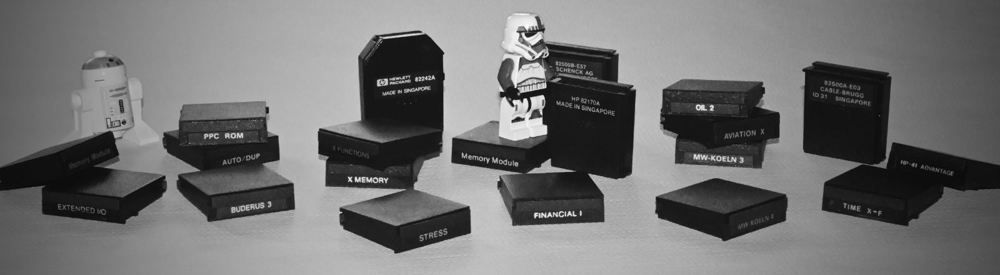

HP-41 Quick Reference Guides for Extension Modules
Contents
| HP 82180A Extended Functions/Memory Module |
| HP 82182A Time Module |
| HP 82183A Extended I/O Module |
| UPCOMING: HP82160A HP-IL Module |
| UPCOMING: HEPAX Module |
Introduction
The purpose of this web site is to provide basic operational information about a few modules for the Hewlett Packard Series 41 calculators. The selection is mainly made on my own needs. However, I will also listen to your wishes. Hopefully the information available here will grow over time.
Feedback
Your feedback is welcome. Send me your comments or suggestions using the feedback form of my calculator blog. Of course, you may also contribute to this web site: if you want to see a particular quick reference guide here, let me know. Maybe you have even scanned images. Any help is highly appreciated!
Service provided by: Calculator Nostalgia